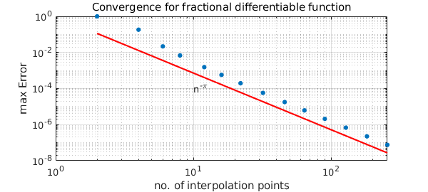
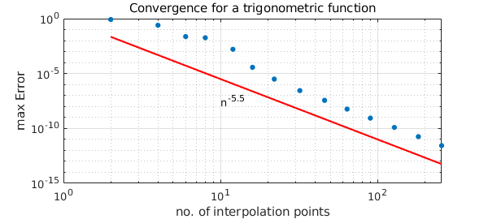

The smoother a function, the faster its approximants converge. Here we approximate by interpolation in Chebyshev points in the usual Chebfun fashion. In analyzing convergence, commonly one considers functions that are $k$ times differentiable for some integer $k$. For example, Theorem 7.2 of [1] asserts that the accuracy will be $O(n^{-1})$ for interpolation of $f(x) = |x|$ on $[-1,1]$, $O(n^{-2})$ for interpolation of $f(x) = x|x|$, and so on. Here, however, we look at two examples of functions where $k$ is not an integer.
Fractional Power Example
First we consider the function $|x|^\pi$.
LW = 'LineWidth';FS = 'FontSize'; MS = 'MarkerSize';
x = chebfun('x');
nn = 2*round(2.^(0:7));
ee = 0*nn;
f = abs(x).^pi;
warning off
for j = 1:length(nn)
fn = chebfun(f,nn(j)); ee(j) = norm(f-fn,inf);
end
warning on
loglog(nn,nn.^-pi,'r',LW,1.6), hold on
loglog(nn,ee,'.',MS,16), hold off
xlabel('No. of interpolation points'), ylabel('Max Error')
text(10,1e-4,'n^{-\pi}',FS,16)
title('Convergence for fractional differentiable function',FS,14)

The fractional differentiability of $f$ clearly explains the convergence rate.
Trigonometric Example
Next we replace $|x|^\pi$ by $\sin(|x|^{x+5.5})$.
f = sin(abs(x).^(x+5.5));
for j = 1:length(nn)
fn = chebfun(f,nn(j)); ee(j) = norm(f-fn,inf);
end
loglog(nn,nn.^-5.5,'r',LW,1.6), hold on
loglog(nn,ee,'.',MS,16),
xlabel('No. of interpolation points'), ylabel('Max Error')
text(10,3e-8,'n^{-5.5}',FS,14)
title('Convergence for a trigonometric function',FS,14)
hold off

Again the fractional differentiability determines the convergence rate.
References
- L. N. Trefethen, Approximation Theory and Approximation Practice, SIAM, 2013.